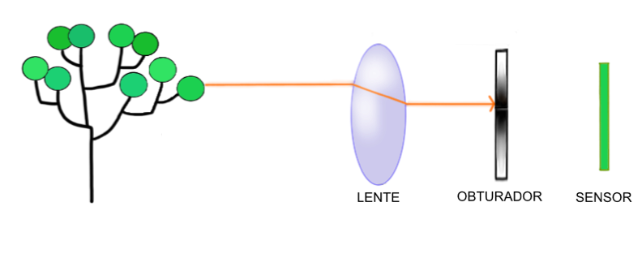
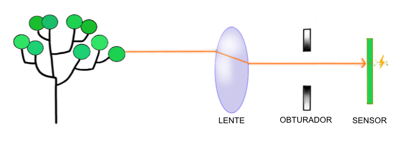
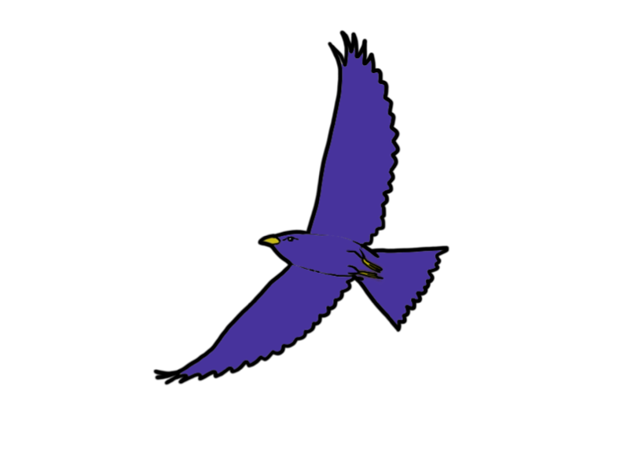
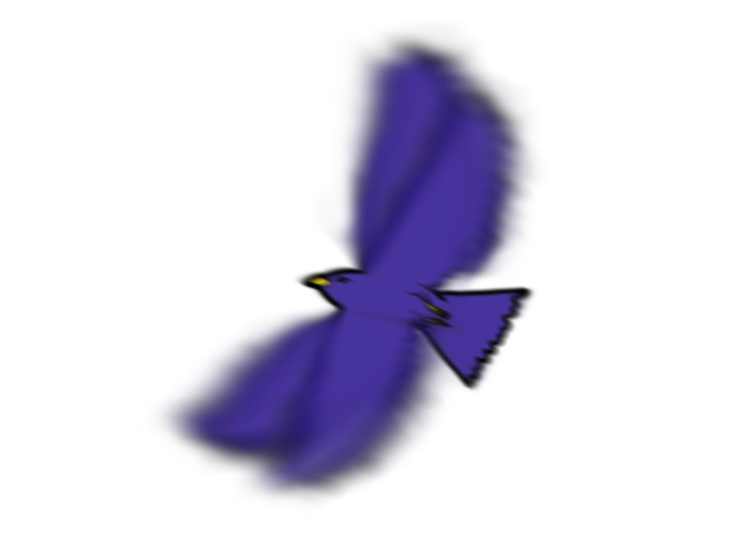
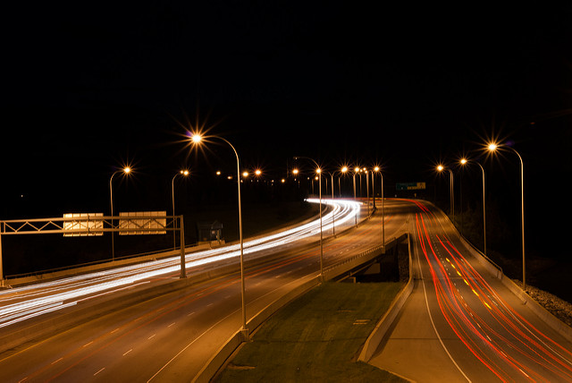

Na aula O Básico vimos que os raios que atravessam a lente da câmera passam pelo diafragma e atingem o sensor. O sensor converte esses raios de luz em sinais elétricos que podem ser usados pelo "cérebro" da câmera para formar a imagem digital.
Raios de luz chegam o tempo todo na lente, mas só queremos que atinjam o sensor na hora da foto. É para isso que existe o obturador. Ele funciona como uma cortina, que bloqueia os raios de luz e só abre durante a foto.
OBTURADOR FECHADO:

DURANTE A FOTO:

Tempo de exposição
Quando clicamos o botão para tirar a foto, o obturador abre, e luz fica atingindo o sensor até o obturador fechar novamente. Chamamos de tempo de exposição o tempo em que o obturador fica aberto.
Enquanto o obturador está aberto, cada pontinho da foto (ou seja, cada pixel do sensor) vai ficando mais claro conforme a luz vai atingindo ele. Assim, quanto maior o tempo de exposição, mais clara vai ficando a foto, pois mais luz atinge os pixels do sensor.
Quanto maior o tempo de exposição, mais clara a foto!
Câmeras que não têm obturador (ex.: celulares, compactas e mirrorless) permitem controle do tempo de exposição pelo tempo em que o sensor fica ligado.
Congelando o movimento
Mudar o tempo de exposição não é útil apenas para controlar a claridade da imagem. Também podemos congelar ou borrar o movimento. Imagine-se fotografando um pássaro batendo as asas.
Fotos com exposições curtas vão mostrar as asas nitidamente na posição em que estavam na hora da foto:

Fotos com exposições longas vão mostrar as asas borradas, pois o sensor vai ter tempo de receber raios das asas em várias posições e vai somar essas informações:

Desenhando com a luz
Você já deve ter visto fotos noturnas de ruas que só mostram o rastro do farol dos carros… Elas são feitas com tempos de exposição longos. Essa foto do dr-scott, por exemplo, teve uma exposição de 30 segundos.
